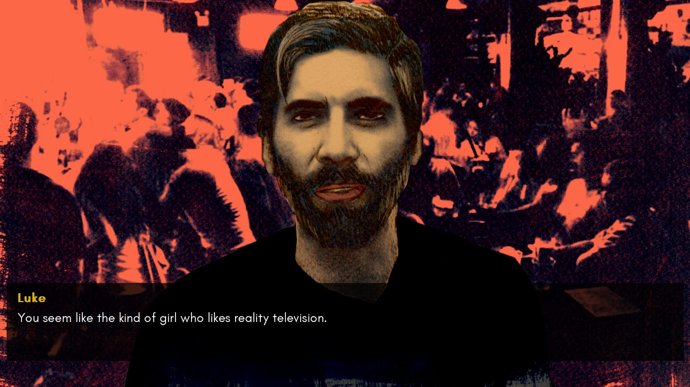
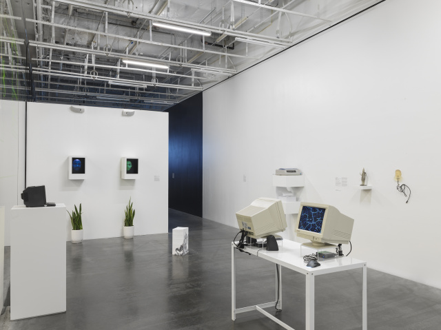
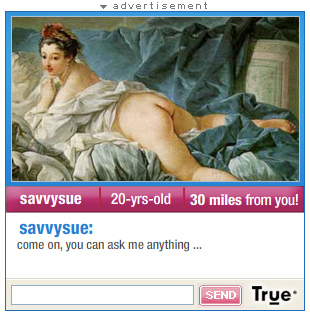

Engineer, Agitator, Constructor:
The Artist Reinvented, 1918–1939
The Merrill C. Berman Collection at MoMA
Through Apr 10, 2021
MoMA

The Game: The Game, the player is placed in the perspective of a femme-presenting person who encounters a series of men in a bar setting.
The men are all prominent figures in the so-called seduction community, an internet-fueled subculture of “pick-up artists” (PUAs).

Group exhibition of a new generation of artists who loosely collaborate on Nasty Nets
They make work in a collaborative way mostly based on found material on the Internet
Surfing the web and transforming it.
In this exhibition digital work was featured in physical form

6/18/11 7:09
Sample comment in the internet surfing club